컴퓨터응용밀링기능사 (2011-02-13 기출문제)
1과목: 기계재료 및 요소
1. 일반적으로 축과 보스에 자동적으로 조정되어 테이퍼 축의 회전체를 결합할 때 사용되는 키(key)는?
- 원뿔 키
- 패더 키
- 반달 키
- 평 키
(정답률: 52%)

2. 다음은 무엇에 대한 설명인가?
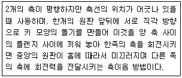
- 플렉시블 커플링
- 유니버셜 커플링
- 올덤 커플링
- 마찰 클러치
(정답률: 52%)
3. 아이볼트에 로프를 걸어 20 kN의 물체를 들어 올릴 때 아이볼트 나사의 크기로 가장 적당한 것은?(단, 나사는 미터 보통나사를 사용하며, 허용인장응력은 48 N/mm2 이다.)
- M 26
- M 30
- M 36
- M 42
(정답률: 42%)
4. 탄소강의 경도를 높이기 위하여 실시하는 열처리는?
- 불림
- 풀림
- 담금질
- 뜨임
(정답률: 79%)
5. 다음과 같은 스프링 상수에서 상수가 k1=10[N/mm], k2=15[N/mm]라면 합성 스프링 상수 값은 얼마인가?
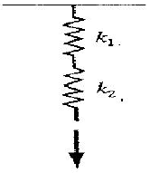
- 3[N/mm]
- 6[N/mm]
- 9[N/mm]
- 12[N/mm]
(정답률: 56%)
6. 금속침투법[cementation] 중 크롬을 확산 침투시키는 표면경화법은?
- 세라다이징(sheradizing)
- 크로마이징(chromizing)
- 칼로라이징(calorizing)
- 패턴팅(patenting)
(정답률: 76%)
7. "밀링에 사용하는 엔드밀의 재료로 일반적으로 SKH2를 사용한다."에서 SKH는 어떤 재료를 나타내는 KS 기호인가?
- 일반 구조용 압연강재
- 고속도 공구강재
- 기계 구조용 탄소강재
- 탄소 공구강재
(정답률: 63%)
8. 주철의 성질에 관한 설명으로 틀린 것은?
- 절삭가공이 쉽다.
- 내마모성이 우수하다.
- 압축강도는 적으나 인장강도 및 굽힘강도가 크다.
- 주조성이 우수하며, 크고 복잡한 것도 제작이 용이하다.
(정답률: 70%)
9. 절삭 공구로 사용되는 재료가 아닌 것은?
- 페놀
- 서멧
- 세라믹
- 초경합금
(정답률: 60%)
10. 구리 4%, 마그네슘 0.5%, 망간 0.5%, 나머지가 알루미늄인 고강도 알루미늄 합금은?
- 실루민
- 두랄루민
- 라우탈
- 로우엑스
(정답률: 78%)
11. 베어링 재료의 구비조건이 아닌 것은?
- 융착성이 좋을 것
- 피로강도가 클 것
- 내식성이 강할 것
- 내열성을 가질 것
(정답률: 63%)
12. 다음 기계요소를 사용기능에 따라 분류한 내용 중 틀린 것은?
- 결합용 기계요소 : 나사, 볼트, 너트, 키, 핀 코터
- 축용 기계요소 : 축, 커플링, 베어링
- 전동용 기계요소 : 벨트, 로프, 체인, 마찰차, 기어
- 제동 및 완충용 기계요소 : 관 이음쇠, 밸브와 콕
(정답률: 62%)
13. 원주피치(P와 모듈(m) 과의 관계를 올바르게 표시한 것은?
- P = πm
- P = π/m
- P = 2πm
- P = m/π
(정답률: 47%)
14. 구리의 특성에 대한 설명으로 틀린 것은?
- 전연성이 좋아 가공이 용이하다.
- 전기 및 열의 전도성이 우수하다.
- 화학적 저항력이 커서 부식이 잘되지 않는다.
- 비중이 작아 경금속에 속한다.
(정답률: 65%)
15. 원통형 코일 스프링의 지수가 9이고, 코일의 평균 지름이 180mm 이면 소선의 지름은 몇 mm 인가?
- 9
- 18
- 20
- 27
(정답률: 78%)
2과목: 기계제도(절삭부분)
16. 기어를 제도할 때 굵은 실선으로 나타내야 하는 것은?
- 잇봉우리원
- 주 투영도를 단면으로 도시할 때 외접 헬리컬 기어의 잇줄방향
- 피치원
- 잇줄 방향선
(정답률: 64%)
17. 그림과 같은 입체도에서 화살표 방향이 정면일 경우 제3각법으로 제도한 것으로 가장 올바른 것은?
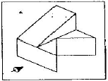
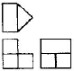
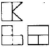
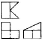
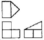
(정답률: 82%)
18. 그림과 같은 나사 도면에서 M12 × 16 / ø10.2 × 20 으로 표시된 치수 기입의 도면해독으로 올바른 것은?
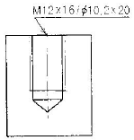
- 암나사를 가공하기 위한 구멍가공 드릴지름은 ø12mm
- 암나사를 가공하기 위한 구멍가공 드릴지름은 ø16mm
- 암나사를 가공하기 위한 구멍가공 드릴지름은 ø10.2mm
- 암나사를 가공하기 위한 구멍가공 드릴지름은 ø20mm
(정답률: 70%)
19. 그림과 같이 선반으로 가공한 단면의 커터의 줄무늬 방향 기호로 가장 적합한 것은?
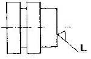
- =
- C
- M
- R
(정답률: 41%)
20. 도면과 같은 제품을 드릴 지름 18mm로 구멍을 뚫을 때, 관통 구멍부인 플랜지의 두께 치수는?
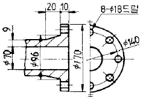
- 8
- 9
- 10
- 18
(정답률: 49%)
21. 기계 제도에서 굵은 1점 쇄선을 사용하는 경우로 가장 적합한 것은?
- 대상물의 보이는 부분의 겉모양을 표시하기 위하여 사용한다.
- 치수를 기입하기 위하여 사용한다.
- 도형의 중심을 표시하기 위하여 사용한다.
- 특수한 가공 부위를 표시하기 위하여 사용한다.
(정답률: 64%)
22. KS 재료 기호 중에서 회주철의 기호는?
- SBC
- GC
- SC
- GCD
(정답률: 63%)
23. 다음 중 치수 입력시 숫자와 병기해서 사용하지 않는 기호는?
- C
- R
- Sø
(정답률: 80%)
24. 대칭형의 대상물을 외형도의 절반과 온단면도의 절반을 조합하여 나타낸 단면도는?
- 계단 단면도
- 한쪽 단면도
- 부분 단면도
- 회전 단면도
(정답률: 67%)
25. 구멍의 최대치수가 축의 최소치수보다 작은 경우이며 항상 죔새가 생기는 끼워 맞춤을 무엇이라 하는가?
- 헐거운 끼워 맞춤
- 억지 끼워 맞춤
- 중간 끼워 맞춤
- 조립 끼워 맞춤
(정답률: 69%)
26. 센터리스 연삭기의 특징 설명으로 틀린 것은?
- 긴 홈이 있는 가공물의 연삭에 적합하다.
- 중공(中空)의 가공물 원통 연삭이 가능하다.
- 가늘고 긴 가공물 연삭이 적합하다.
- 대형이나 중량물의 연삭은 불가능하다.
(정답률: 38%)
27. 기어 절삭 방법에 해당하지 않는 것은?
- 형판을 이용한 방법
- 총형 커터를 이용한 방법
- 복식 공구대를 이용한 방법
- 창성법을 이용한 방법
(정답률: 47%)
28. 공작물을 절삭 공구로 절삭할 때 발생하는 절삭열은 다음 세 가지 때문이다. 이들의 절삭열 분산 비율로 가장 적당한 것은?
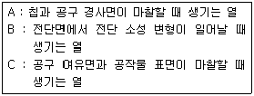
- A : 33%, B : 33%, C : 33%
- A : 10%, B : 30%, C : 60%
- A : 60%, B : 30%, C : 10%
- A : 30%, B : 60%, C : 10%
(정답률: 38%)
29. 합금 공구강을 설명한 내용 중 옳지 않은 것은?
- 탄소 공구강에 Cr, W, Ni, V 등의 성분을 첨가하여 만든다.
- 탄소 공구강보다 절삭 성능이 좋고 내마멸성과 고온 경도가 높다.
- 450℃ 정도까지는 경도를 유지할 수 있다.
- 합금 공구강의 대표적인 것은 스텔라이트이다.
(정답률: 44%)
30. 스텔라이트 앤빌의 측정명이 원추형으로 드릴의 홈이나 나사의 골지름 등을 측정하는데 주로 사용되는 마이크로미터는?
- 그루브 마이크로미터
- 포인트 마이크로미터
- 지시 마이크로미터
- 기어 마이크로미터
(정답률: 42%)
3과목: 기계공작법
31. 날 눈의 세워진 방식에 따라서 분류한 줄의 종류에 해당하지 않는 것은?
- 단목
- 복목
- 귀목
- 유목
(정답률: 38%)
32. 지름이 40mm인 연강을 주축 회전수가 500rpm인 선반으로 절삭할 때의 절삭속도는 약 몇 m/min인가?
- 12.5
- 20.0
- 31.4
- 62.8
(정답률: 49%)
33. 밀링 가공시 분할대를 사용하여 분할하는 방법이 아닌 것은?
- 직접 분할법
- 간접 분할법
- 차동 분할법
- 단식 분할법
(정답률: 55%)
34. 다음 숫돌 입자의 기호 중 경도가 가장 높은 것은?
- A
- B
- WA
- GC
(정답률: 41%)
35. 기어나 벨트 풀리의 소재와 같이 구멍이 뚫린 일감의 바깥 원통면이나 옆면을 가공할 때 구멍에 끼워 센터로 지지하기 위한 선반용 부품은?
- 면판
- 맨드릴
- 방진구
- 센터
(정답률: 36%)
36. 래핑의 일반적인 특징 설명으로 틀린 것은?
- 가공면이 매끈한 거울면을 얻을 수 있다.
- 정밀도가 높은 제품을 가공할 수 있다.
- 가공이 복잡하고 대량 생산이 불가능하다.
- 작업이 지저분하고 먼지가 많다.
(정답률: 61%)
37. 수직형 밀링 머신에서 사용하는 절삭 공구가 아닌 것은?
- 엔드밀
- T홈 커터
- 더브테일 커터
- 플레인 밀링 커터
(정답률: 43%)
38. 절삭가공에서 구성인선(built-up edge)의 방지 대책으로 옳은 것은?
- 절삭 속도를 낮춘다.
- 절삭 깊이를 크게 한다.
- 윤활성이 좋은 절삭 유제를 사용한다.
- 바이트의 윗면 경사각을 작게 한다.
(정답률: 62%)
39. 각도 측정 방법에 해당하지 않는 것은?
- 각도게이지를 이용한 각도 측정
- 사인바를 이용한 각도 측정
- 나이프 에지를 이용한 각도 측정
- 만능 바벨 각도기를 이용한 각도 측정
(정답률: 79%)
40. 선반의 주요 부분이 아닌 것은?
- 컬럼
- 왕복대
- 심압대
- 주축대
(정답률: 78%)
4과목: CNC공작법 및 안전관리
41. 기계공작은 가공 방법에 따라 절삭 가공과 비절삭 가공으로 나눈다. 다음 중 절삭 가공 방법이 아닌 것은?
- 선삭
- 밀링
- 용접
- 드릴형
(정답률: 80%)
42. 니형 밀링머신의 컬럼면에 설치하는 것으로 주축의 회전 운동을 수직 왕복 운동으로 변환시켜 주는 장치는?
- 원형테이블
- 분할대
- 래크 절삭 장치
- 슬로팅 장치
(정답률: 57%)
43. CNC기계 조작반의 모드 선택 스위치 중 새로운 프로그램을 작성하고 등록된 프로그램을 삽입, 수정, 삭제할 수 있는 모드는 무엇인가?
- JOG
- AUTO
- MDI
- EDIT
(정답률: 71%)
44. CNC공작기계의 조작판에서 선택적 프로그램 정지(optional program stop)를 나타내는 M기능은?
- M00
- M01
- M02
- M⑤
(정답률: 53%)
45. CNC 공작기계의 특징에 해당하지 않는 것은?
- 제품의 균일성을 유지할 수 없다.
- 생산성을 향상시킬 수 있다.
- 제조원가 및 인건비를 절감할 수 있다.
- 특수 공구제작의 불필요로 공구 관리비를 절감할 수 있다.
(정답률: 65%)
46. CNC기계의 동력 전달 방법에 속하지 않는 것은?(오류 신고가 접수된 문제입니다. 반드시 정답과 해설을 확인하시기 바랍니다.)
- 기어(gear)
- 타이밍 벨트(timing belt)
- 커플링(coupling)
- 로프(lope)
(정답률: 37%)
47. CNC선반의 원점복귀 기능 중 자동원점복귀를 나타내는 것은?
- G27
- G28
- G29
- G30
(정답률: 72%)
48. CNC 공작기계에서 전원을 투입한 후 일반적으로 제일 처음하는 것은?
- 좌표계 설정
- 기계 원점 복귀
- 제 2 원점 복귀
- 자동 공구 교환
(정답률: 77%)
49. CNC선반에서의 나사가공(G32)에 대한 설명으로 틀린 것은?
- 이송속도 조절 오버라이드는 100%로 고정하여야 한다.
- 주축 회전수 일정제어(G97)로 지령하여야 한다.
- 가공 도중에 이송 정지(Feed hold) 스위치를 ON 하면 자동으로 정지한다.
- 나사가공이 완료되면 자동으로 시작점으로 복귀한다.
(정답률: 37%)
50. CNC 선반에서 NC 프로그램을 작성할 때 소수점을 사용할 수 있는 어드레스만으로 구성된 것은?
- X, U, R, F
- W, I, K, P
- Z, G, D, Q
- P, X, N, E
(정답률: 68%)
51. 밀링작업에서 안전 및 유의사항으로 틀린 것은?
- 정면 밀링 커터 작업시 칩 커버를 설치한다.
- 측정기와 공구는 기계 테이블위에 놓고 작업한다.
- 공작물 설치시는 반드시 주축을 정지시킨다.
- 주축 회전 중에는 칩을 제거하지 않는다.
(정답률: 83%)
52. CNC선반에서 원호 가공을 할 때 반지름 값을 R 값이나 I, K 값으로 명령하게 되는데 Z축 방향의 원호 가공 값에 해당하는 것은?
- I
- U
- W
- K
(정답률: 39%)
53. 다음 CNC선반 프로그램에서 공작물 직경이 10mm일 때의 주축의 회전수는 몇 rpm인가?
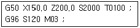
- 382
- 1000
- 2000
- 3820
(정답률: 66%)
54. DNC 시스템의 구성요소가 아닌 것은?
- CNC 공작기계
- 중앙 컴퓨터
- 통신선
- 디지타이저
(정답률: 58%)
55. CNC선반에서 이송이 정지되는 휴지(dwell) 시간이 나머지 셋과 다른 것은?
- G04, X2.5 ;
- G04 U2.5 ;
- G04 X250 ;
- G04 P2500 ;
(정답률: 57%)
56. 다음 CNC선반의 안ㆍ바깥지름 거친절삭 사이클(G71)의 내용을 설명한 것 중 틀린 것은?
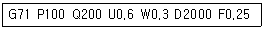
- P100 Q200은 다듬 절삭가공 지령절의 첫번째 전개번호와 마지막 전개번호이다.
- U0.6은 X축 방향 다듬절삭 여유(지름 지령) 이다.
- W0.3은 Z축 방향 다듬절삭 여유이다.
- D2000은 가공 길이(지름 지령)이다.
(정답률: 45%)
57. 머시닝센터에서 ø12-2날 초경합금 엔드밀을 이용하여 절삭속도 35m/min, 이송 0.⑤mm/날, 절삭 깊이 7mm의 절삭 조건으로 가공하고자 할 때 다음 프로그램의 ( )에 적합한 데이터는?
- 12.25
- 35.0
- 92.8
- 928.0
(정답률: 39%)
58. 머시닝센터 프로그램에 관한 다음 설명 중 틀린 것은?
- 절대 명령은 G90으로 지령한다.
- 증분 명령은 G92로 지령한다.
- 증분 명령은 공구 이동 시작점부터 끝점까지의 이동량(거리)으로 명령하는 방법이다.
- 절대 명령은 공구 이동 끝점의 위치를 공작물 좌표계 원점을 기준으로 명령하는 방법이다.
(정답률: 50%)
59. CNC 기계 가공 중 충돌 사고가 발생할 위험이 있을 때, 응급 처리 내용으로 가장 알맞은 것은?
- 선택적 정지(optional stop) 버튼을 누른다.
- 원상 복귀(reset) 버튼을 누른다.
- 가공 시작(cycle start) 버튼을 누른다.
- 비상 정지(emergency stop) 버튼을 누른다.
(정답률: 73%)
60. 아래의 프로그램으로 머시닝센터 작업시 공구의 길이가 그림과 같을 때 H03에 대한 적합한 공구 길이 보정값은?
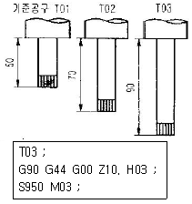
- 40
- -40
- -90
- 90
(정답률: 43%)